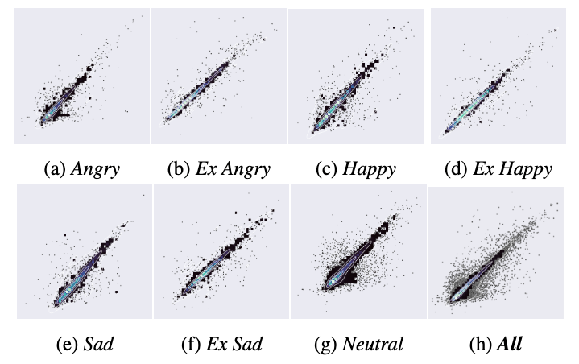

Localized Pitch Control for Encoder-Decoder Text-to-Speech Architectures
Abstract. This work introduces a method for localized pitch control in text-to-speech (TTS) systems, adaptable to any encoder-decoder architecture. The approach integrates a pitch prediction module, which predicts natural-sounding pitches for voiced phonemes in the target phrase, and a pitch encoding module, which quantizes pitch values and provides associated pitch embeddings sent to the decoder to exert the pitch control. A graphical user interface (UI) supports fine-grained pitch control via drawn or predefined curves that indicate modifications to the pitch predictions prior to encoding. Results are demonstrated using Tacotron 2, with the added pitch predictor module achieving a mean absolute error of 19.08 Hz (9% relative) vs. ground truth, and pitch controllability showing a correlation of 0.91 for target vs. actual pitch in rendered speech. Audio demos on the accompanying website highlight the usefulness and naturalness of pitch-controlled synthesized speech that the method enables.
Contents
System Overview

Pitch Control Architecture (blue boxes: added pitch control components)

Scatter plots of acoustic model pitch control (target vs. actual pitches) per emotion, and overall. Quartile level sets to show concentration near slope = 1 line
Pitch Control Examples
| Neutral | I’m eating a very delicious and bright red apple. |  |
Pitch curve lowers the first half of the sentence and raises the second half, emphasizing the characteristics of the apple. | ||
| Neutral | Her pet dog has an amazingly friendly personality. |  |
The amazingly friendly description of the dog is raised in pitch for emphasis. | ||
| Happy | The king is marching to the field and to glory. |  |
The end is reduced in pitch to be more subdued in nature. | ||
| Happy | That’s the best news I’ve heard in a long time. |  |
The words describing the news are raised in pitch for emphasis and to underline the happy emotion. | ||
| Extreme Happy | There are so many people here at the party. |  |
The pitch for many people is raised in pitch to further emphasize the excitement. | ||
| Sad | The bus left before I arrived. |  |
The pitch curve causes the pitch to gradually decrease through the sentence, further emphasizing the already decreased pitch with synthesized sad emotions. | ||
| Extreme Sad | The rain is really coming down heavy today. |  |
The pitch is increased on really to emphasize that word and imply the sad emotion is focused on the degree of rain. | ||
| Angry | What is the question you're trying to ask? |  |
The pitch on the last word is adjusted to make it more clearly a question and to emphasize the focus of the speaker on that word. | ||
| Extreme Angry | Why am I learning about this now of all times? |  |
The pitch is on the back half of the question, particularly on now to further emphasize the emotion and anger of the speaker. |